Masters 2023: Stop & Go
2023Nueva York
Stop & Go
Una pausa para revisar aprendizajes y pensar los próximos pasos del país. Litio, finanzas, transición política, biotecnología y futuro del trabajo estuvieron en la agenda.
- Fecha
- 15 y 16 de abril de 2023
- Sede
- Columbia Business School · Consulado Argentino · Life Rooftop
Speakers
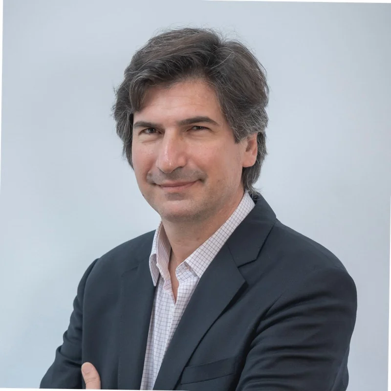
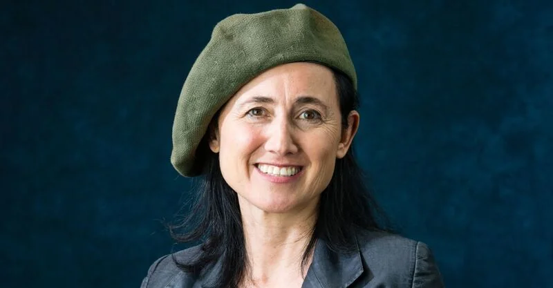
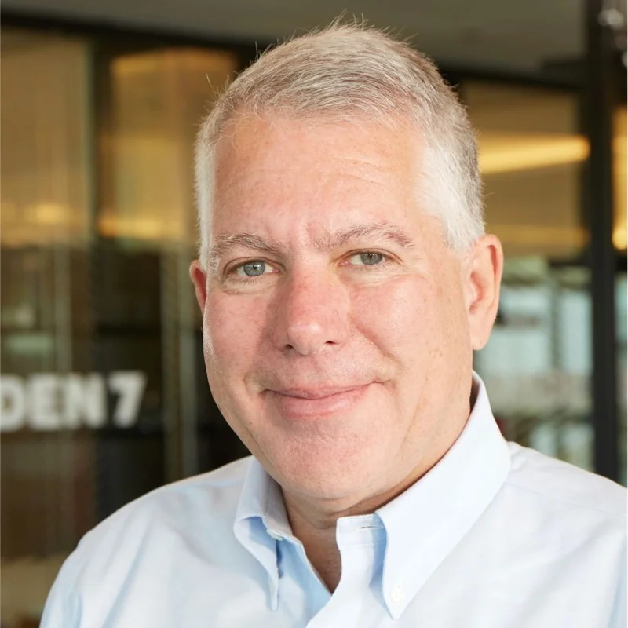
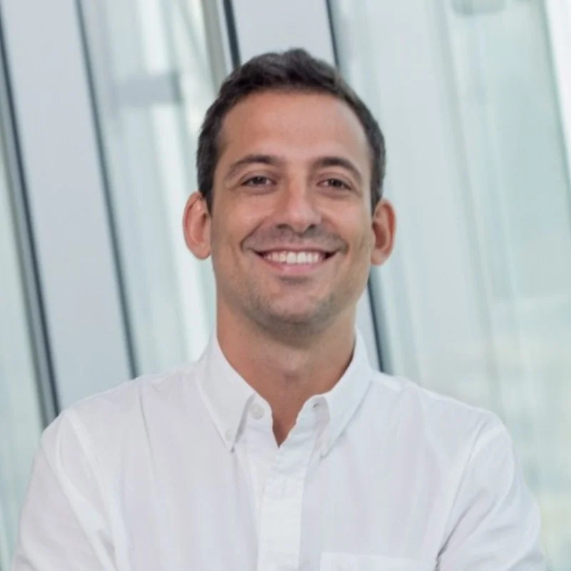
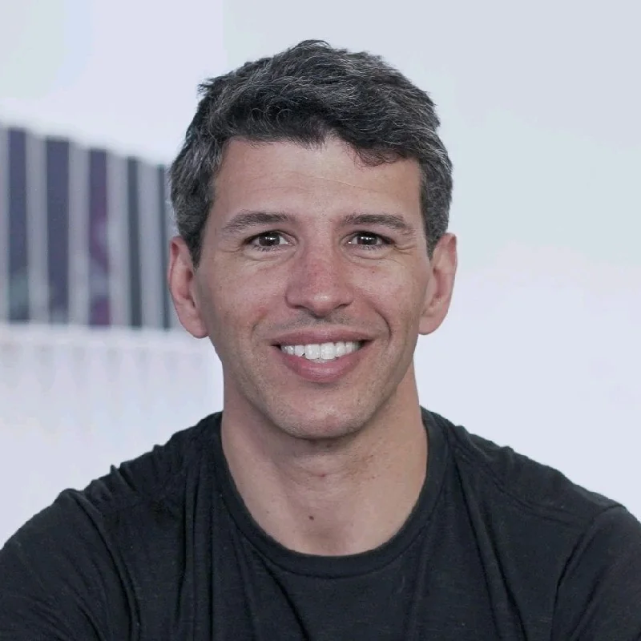
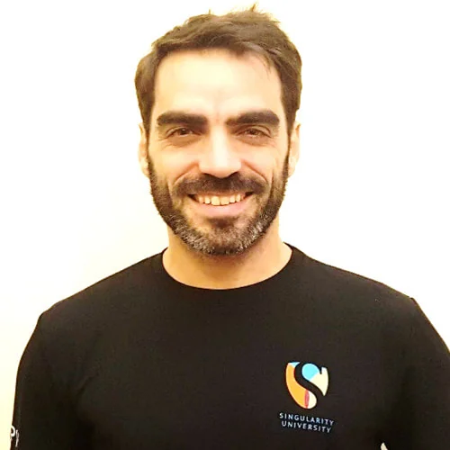
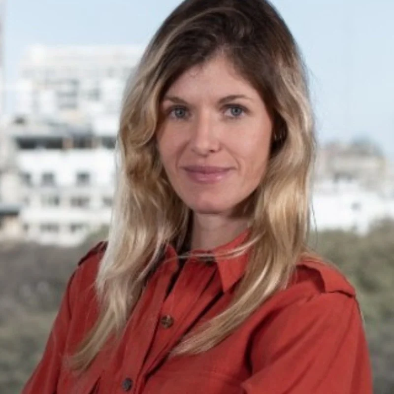
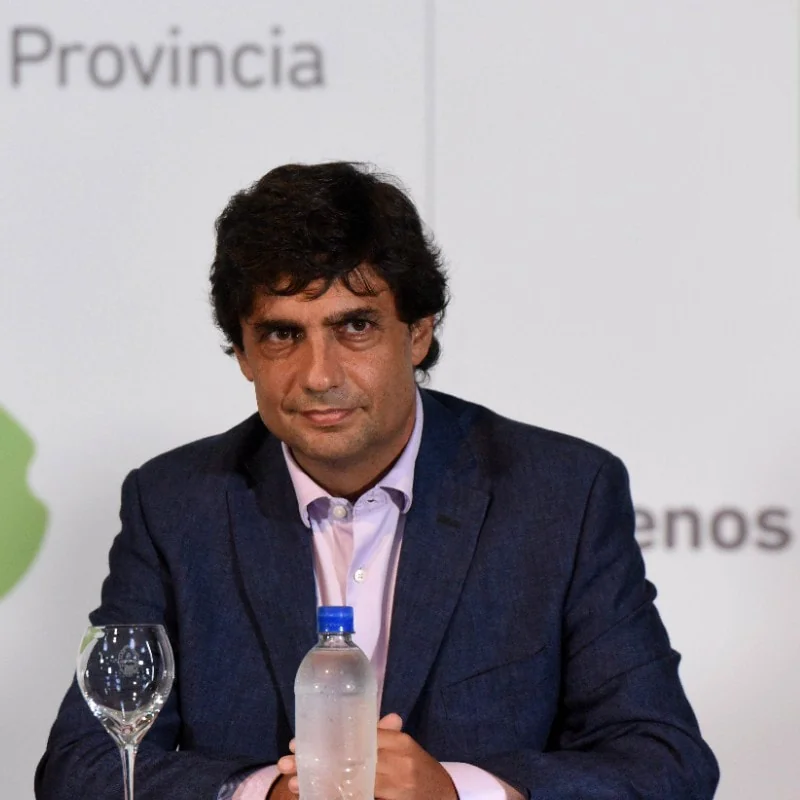
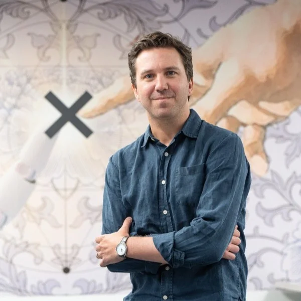
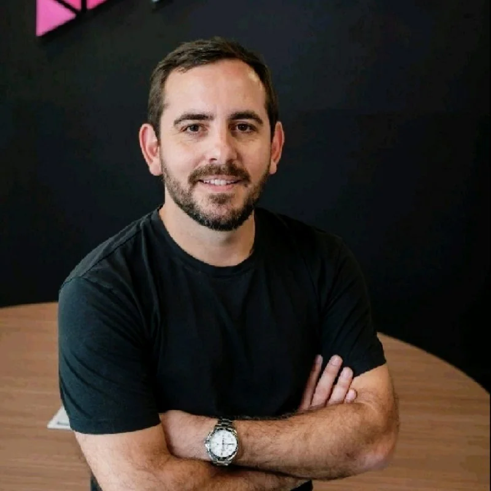
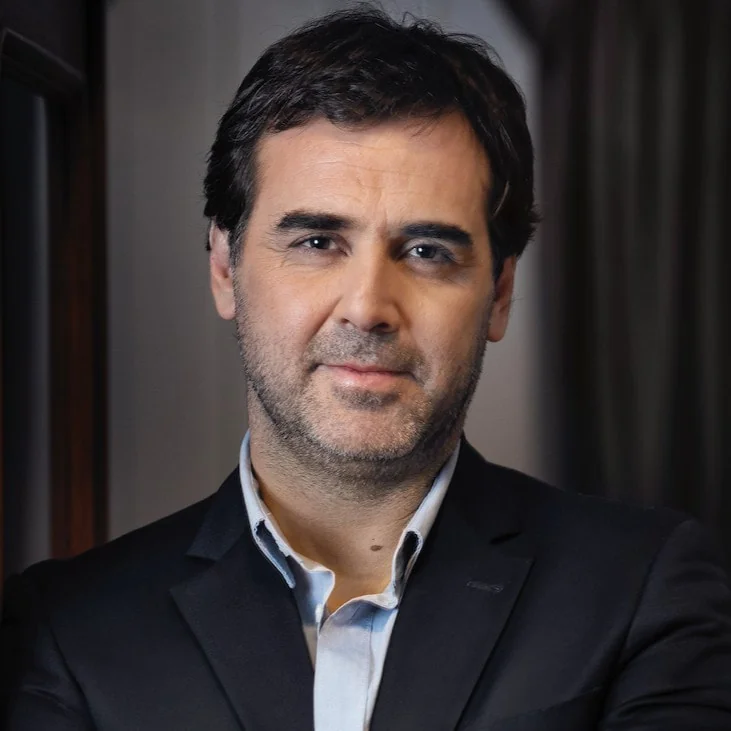
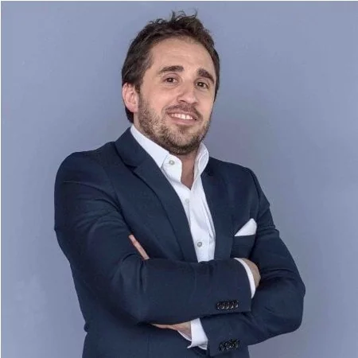
Sedes
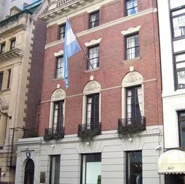
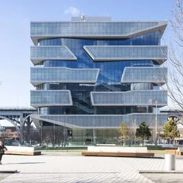
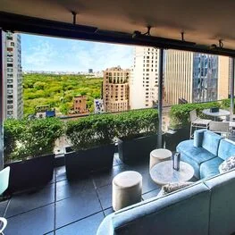
Agenda
El sábado 15 de abril, en Columbia Business School, la jornada comienza con acreditación y desayuno, seguida de paneles sobre oportunidades en la industria del litio, innovación financiera y liderazgo político, culminando con un cocktail en Life Rooftop a las 8:30 PM.
El domingo 16 de abril se exploraron los desafíos de la transición política, el capital de riesgo en biotecnología, y el impacto de la tecnología y la demografía en el futuro del trabajo. Estas sesiones brindaron una perspectiva integral sobre el desarrollo económico y social del país, cerrando con un almuerzo de despedida.
El domingo 16 de abril se exploraron los desafíos de la transición política, el capital de riesgo en biotecnología, y el impacto de la tecnología y la demografía en el futuro del trabajo. Estas sesiones brindaron una perspectiva integral sobre el desarrollo económico y social del país, cerrando con un almuerzo de despedida.
Agenda y presentaciónRecorré el material de esta edición
Abrir ↗